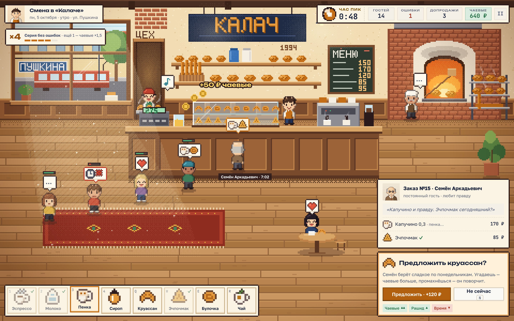
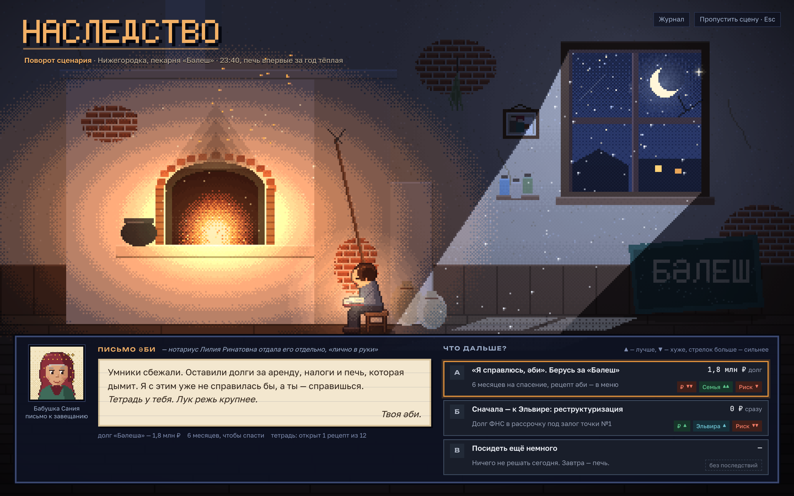
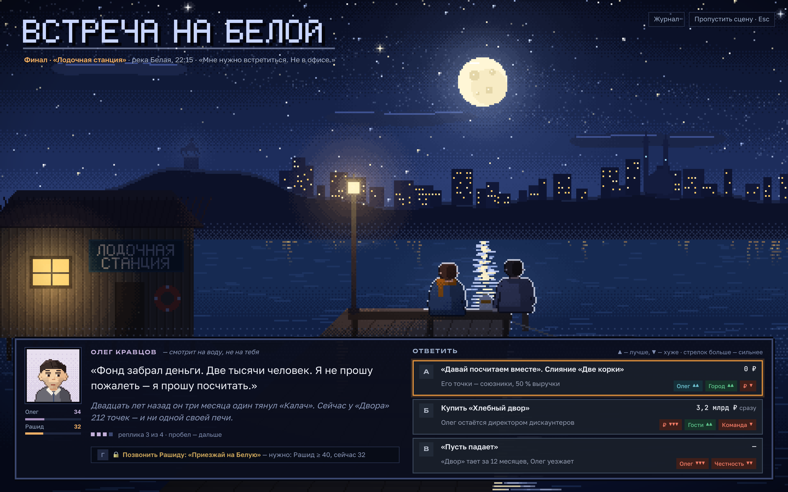
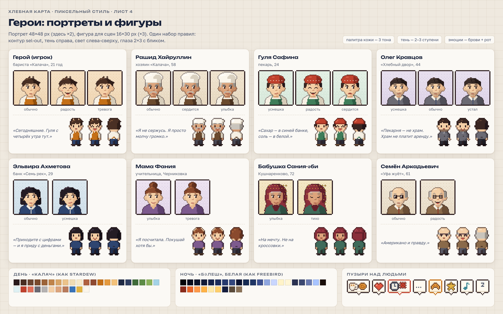

Карты остаются векторными, пиксели — для людей и важных моментов. Генплан Уфы и России не трогаем. В пикселях — герои, очередь в пекарне, эмоции и сюжетные сцены. Панели, цифры и тексты диалогов — обычным шрифтом игры, чтобы всё читалось.

Утро на улице Пушкина: трамвай в окне, солнечный луч с пылинками, печь с огнём. Рашид у печи с лопатой, Гуля выносит круассаны, Семён Аркадьевич у кассы. У гостей в очереди пузыри заказов и шкала терпения. Поверх — таймер, чаевые, серия без ошибок, «Предложить круассан?» и станции-«инвентарь».

Два источника света: тёплые угли в печи и холодный лунный луч с пылинками. На стене — фото бабушки с дедом у той же печи, у стены — старая вывеска «БӘЛЕШ». Внизу — письмо әби на бумаге и три варианта со значками последствий, как в окне события.

Двое на краю мостков, между ними — лунная дорожка и пакет из «Калача». Фонарь, светящееся окно лодочной станции, на том берегу — огни города, минареты «Ляля-Тюльпан» и памятник Салавату на обрыве. Реплика Олега, три ответа и закрытый секретный вариант «Позвонить Рашиду».

Восемь героев: портреты 48×48 (у главных по три эмоции, у остальных по две) и фигуры 16×30 спереди, с эмоцией и спиной. Ниже — палитры дня и ночи и набор пузырей над людьми.
px.js): примитивы, выборочный контур (sel-out), байеровский дизеринг, пиксельный шрифт 5×7 с кириллицей и «ә».cast.js) — один набор параметров для портрета и фигуры. Эмоции меняют брови, глаза и рот.node docs/mockups/pixel/shoot.js.